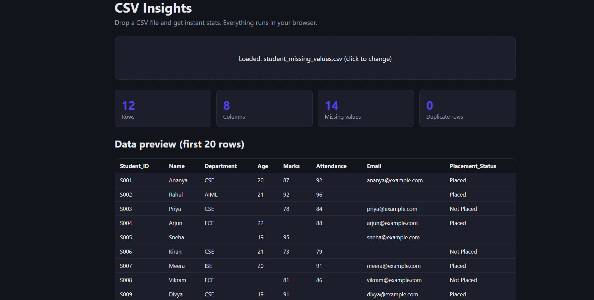
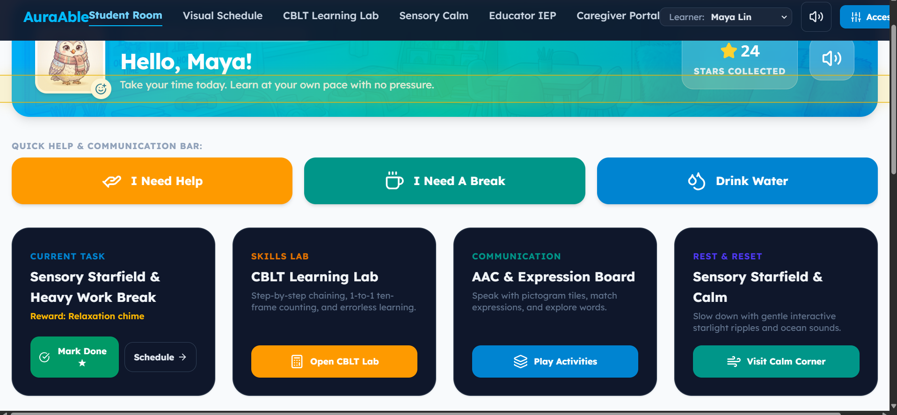

AI Resume Screener
An AI-powered resume screening application that analyzes resumes, extracts relevant skills, and provides job-matching insights.
Technologies: Python, Machine Learning, HTML, CSS, JavaScript
View on GitHubHere are some of the projects I have worked on while learning artificial intelligence, machine learning, programming, and web development.
An AI-powered resume screening application that analyzes resumes, extracts relevant skills, and provides job-matching insights.
Technologies: Python, Machine Learning, HTML, CSS, JavaScript
View on GitHub
A web-based project designed to analyze CSV data, identify missing values, and present useful insights in an easy-to-understand format.
Technologies: HTML, CSS, JavaScript
View on GitHub
An accessible, sensory-friendly learning platform that lets students customize text, colors, motion, fonts, sound, and vibration to suit their needs. It also includes a simple drag-and-drop daily schedule.
Technologies: React, TypeScript, HTML5, CSS3, Web Accessibility (WCAG)
View on GitHub